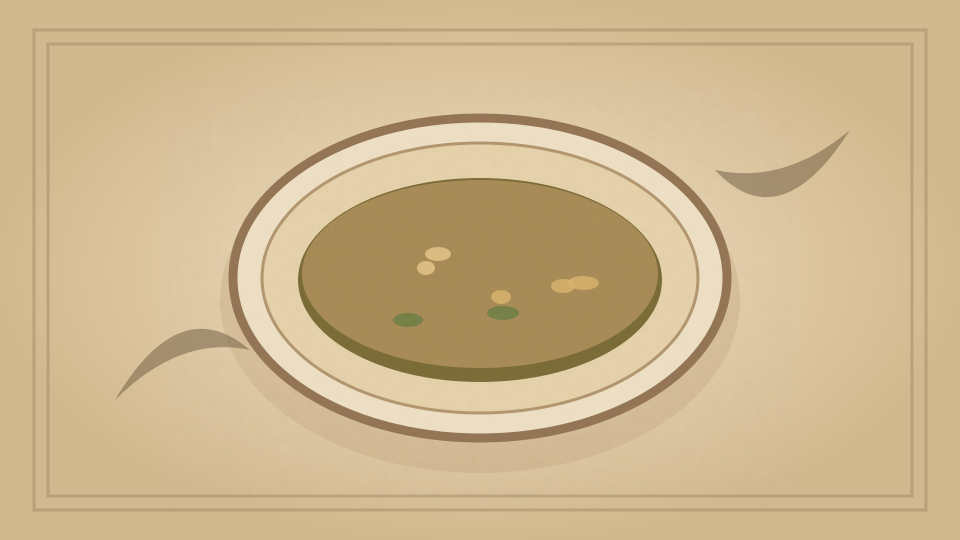

1910 · Fannie Merritt Farmer · SOUPS
Bouillon
The Boston Cooking-School Cook Book

Historical Recipe
The following text is extracted from the 1910 edition, retaining historical terminology and quantities.
Original Ingredients & Directions
5 lbs. lean beef from middle of round 2 lbs. marrow-bone 3 quarts cold water 1 teaspoon peppercorns 1 tablespoon salt Carrot ⅓ cup each, cut in dice Turnip Onion Celery
5 lbs. lean beef from middle of round
2 lbs. marrow-bone
3 quarts cold water
1 teaspoon peppercorns
1 tablespoon salt
Carrot
⅓ cup each, cut in dice
Turnip
Onion
Celery
Wipe, and cut meat in inch cubes. Put two-thirds of meat in soup kettle, and soak in water thirty minutes. Brown remainder in hot frying-pan with marrow from marrow-bone. Put browned meat and bone in kettle. Heat to boiling-point; skim thoroughly, and cook at temperature below boiling-point five hours. Add seasonings and vegetables, cook one hour, strain, and cool. Remove fat, and clear. Serve in bouillon cups.
Automatically extracted transcription; editorial verification pending. Historical instructions may not meet modern food-safety standards.